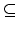
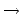

f (a1,..., an) must be in X
| Ambiguous or Incomplete Inductive Definitions |
An important notion in Computer Science is the syntactical concept of terms. Examples of terms can be:
Sets of terms are usually defined by induction. In such a schema, a set of terms is seen in a constructive way: each element of an inductively defined set is either constructed from simpler elements of the set or a basic element. For instance, a is a basic element, g(f(a,b),b,s(a)) is constructed from f(a,b), b and from s(a) using the constructor g. In the same vein, f(a,b) is constructed from a and from b using the constructor f.
More formally, an inductive definition of a set T of terms is composed by a non-empty set B of basic elements and a set K of constructors. Then, we say that T is the smallest set X containing B (i.e. B  X) and the elements that respect the following rule:
Let hB : B  N be a total function that maps every symbol of B to a positive integer, and hK be a total function over K that maps every n -ary constructor to an n-ary function over positive integers.
In such a setting, we define the notion of natural
interpretation h as a function from T to N that maps
every term t  T to a positive integer in the following way:
T to a positive integer in the following way:
We say that an inductive definition T paired with a natural
interpretation h is ambiguous when there exist two terms
t1, t2  T such that
h(t1) = h(t2). We also say that (T, h)
is incomplete when there exists a positive integer n such
that there is no term t that verifies h(t) = n. Finally we say
that (T, h) is regular if it is neither incomplete nor
ambiguous.
T such that
h(t1) = h(t2). We also say that (T, h)
is incomplete when there exists a positive integer n such
that there is no term t that verifies h(t) = n. Finally we say
that (T, h) is regular if it is neither incomplete nor
ambiguous.
Given an inductive definition of a set T of term and a natural
interpretation h, your task consists in qualifying if (T, h) is
ambiguous, incomplete, both or regular.
In the context of this problem, we will only consider simple interpretations. As a consequence, elements in hK are simple functions defined by the following grammar:
For a p-ary function, the only valid varid are x1,
x2 ... xp, x1 for the first argument,
x2 for the second argument, and so on. Consider that every
component in the definition of a function is separated from the other
by a single space. For instance the successor function is
described by ( x1 + 1 ).
In order to simplify the problem, you will not have to consider the
whole set of natural numbers. You only will have to consider the set
{N..M} with
0  N < M
N < M  30000, both provided by the input
data. Consider also that each constructor have at least one parameter
and at most 5 parameters.
30000, both provided by the input
data. Consider also that each constructor have at least one parameter
and at most 5 parameters.
The input will contain several test cases, each of them as described below. Consecutive test cases are separated by a single blank line.
The input consists in the following lines:
For each test case, the output must follow the description below. The outputs of two consecutive cases will be separated by a blank line.
The output is organized following one of these four situations:
0 30000 1 1 1 0 ( x1 + 1 ) 0 30000 1 1 1 1 ( x1 + 1 ) 0 30000 1 2 1 2 1 ( x1 + 1 ) ( x1 + x2 )
REGULAR INCOMPLETE 0 INCOMPLETE 0 AMBIGUOUS 2